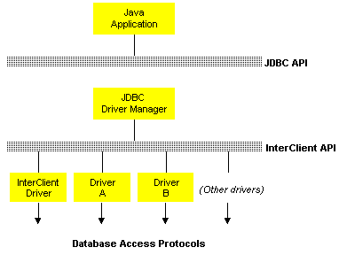
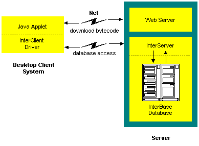

InterClient Architecture
The JDBC API is the framework for the InterClient API. The JDBC
API is a Java application programming interface to SQL databases that was
developed by Sun Microsystems. As a Java/InterClient developer, it's important
to be familiar with JDBC and how it is driving client-server database applications
development.
About the JDBC API

Figure 1 - JDBC Architecture
Java developers wanted to write code that is independent of the DBMS or
database connection type being used, so Sun decided to support the Java
community by defining a framework for generic SQL database access. The
JDBC API is a generic call-level SQL interface that allows Java developers
to develop DBMS-independent Java applications and tools using a single
interface. The JDBC API does the following:
-
Allows programmers to write to a single database interface
-
Enables Java application development tools and products to be DBMS-independent
-
Allows database vendors to provide a wide variety of connectivity solutions
-
Note: JDBC constructs are interfaces which the InterClient
classes support. The JDBC interface is simply an API that provides
entry points to the JDBC; there is no code associated with it. The InterClient
classes provide the code that actually implements the JDBC API.
Why Use Java?
Java is a robust, secure, easy to use, easy to understand language, and
applications written in Java can be downloaded automatically on a network.
This makes it an excellent language framework for developing client/server
database applications. Java's ability to deliver executable content over
the Internet/Intranet allows Web pages to contain dynamic and interactive
content, where the best a Java-less Web has to offer is static, hyperlinked
content.
About InterClient
As an all-Java JDBC driver, InterClient enables platform-independent, client/server
development for the Internet and corporate Intranets. The advantage of
an all-Java driver versus a native-code driver is that you can deploy InterClient-based
applets without having to manually load platform-specific JDBC drivers
on each client system (the Web servers automatically download the InterClient
classes along with the applets). Therefore, there's no need to manage local
native database libraries, which simplifies administration and maintenance
of customer applications. As part of a Java applet, InterClient can be
dynamically updated, further reducing the cost of application deployment
and maintenance.
InterClient allows Java applets and applications to:
-
Open and maintain a high-performance, direct connection to an InterBase
database server
-
Bypass resource-intensive, stateless Web server access methods
-
Allow higher throughput speeds and reduced Web server traffic
InterClient Audience
The primary audience for InterClient is developers who wish to create Java-based
client-server applications. Java developers should be able to seamlessly
swap RDBMS back-ends underneath their JDBC applications. InterClient provides
a small footprint, easy to maintain RDBMS (InterBase) as the back end to
JDBC applications. An InterBase backend is an ideal solution because it's
small, economical, and conforms to the same SQL standards as the JDBC.
InterBase developers who are writing new Java-based client programs
can use InterClient to access their existing InterBase databases. Because
InterClient is an all-Java driver, it can also be used on Sun's new NC
(Network Computer), a desktop machine that runs applets. The NC has no
hard drive or CD ROM; users access all of their applications and data via
applets downloaded from servers.
InterClient Architecture

Figure 2 - InterClient Architecture
The InterClient product consists of two major pieces:
-
A client-side Java package, called InterClient, containing a library
of Java classes that implement most of the JDBC API and a set of extensions
to the JDBC API. This package interacts with the JDBC Driver Manager to
allow client-side Java applications and applets to interact with InterBase
databases.
-
A server-side driver, called InterServer. This server-side middleware
serves as a translator between the InterClient-based clients and the InterBase
database server.
Developers can deploy InterClient-based clients in two ways:
-
Java applets are Java programs that can be included in an
HTML page with the <APPLET> tag, served via a web server, and viewed
and used on a client system using a Java-enabled web browser. This deployment
method doesn't require manual installation of the InterClient package on
the client system. It does however require a Java-enabled browser on the
client system.
-
Java applications are stand-alone Java programs for execution
on a client system. This deployment method requires the InterClient package,
and a Java Runtime Environment (JRE) installed on the client system.
The JRE includes the JDBC Driver Manager.
InterClient Communication
InterClient is a driver for managing interactions between a Java applet
or application and an InterBase database server. On a client system, InterClient
works with the JDBC Driver Manager to handle client requests through the
JDBC API. To access an InterBase database, InterClient communicates via
a TCP/IP connection with an InterServer translator that runs on the same
system as the InterBase database server. InterServer forwards InterClient
requests to the InterBase server and passes back the results to the InterClient
process on the client machine.
Send comments or suggestions to interclient@interbase.com